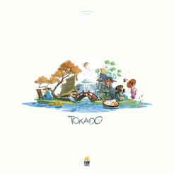

Tokaido
Travel the famed Tokaido road, visit hot springs, try new food, and paint landscapes.
2-5 Players
45 Min
Age:8+
Designer: Antoine Bauza
Artist: Xavier Gueniffey Durin
Publisher: Funforge
In Tokaido, each player is a traveler crossing the "East sea road",
one of the most magnificent roads of Japan. While traveling, you will
meet people, taste fine meals, collect beautiful items, discover great
panoramas, and visit temples and wild places but at the end of the
day, when everyone has arrived at the end of the road you'll have to
be the most initiated traveler – which means that you'll have to be
the one who discovered the most interesting and varied things.
The potential action spaces in Tokaido are laid out on a linear track,
with players advancing down this track to take actions. The player who
is currently last on the track takes a turn by advancing forward on
the track to their desired action and taking that action, so players
must choose whether to advance slowly in order to get more turns, or
to travel more rapidly to beat other players to their desired action
spaces.
The action spaces allow a variety of actions that will score in
different, but roughly equal, ways. Some action spaces allow players
to collect money, while others offer players a way to spend that money
to acquire points. Other action spaces allow players to engage in
various set collections that score points for assembling those sets.
Some action spaces simply award players points for stopping on them,
or give the player a randomly determined action from all of the other
types.
All of the actions in Tokaido are very simple, and combined with a
unique graphic design, Tokaido offers players a peaceful zen mood in
its play.